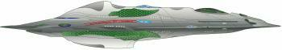

Flotta Stellare - Classe Wells |
|
|
|  |
Nave temporale. Il motore a curvatura dispone di un collettore triciclico di
immissione, il primo ad essere collaudato nello spazio profondo.
Dislocamento: 700.000 tonnellate.
| USS Relativity NCV-474439-G Nave in servizio nel XXIX secolo comandata dal capitano Braxton. | Relativity | Il motto della targa commemorativa è «The only reason for time is so everything doesn't happen at once» di E.M. Rauch |